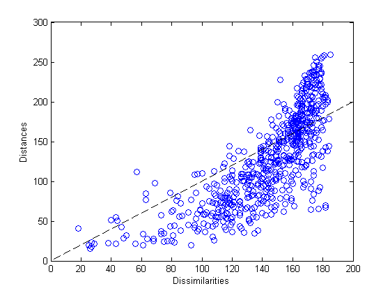
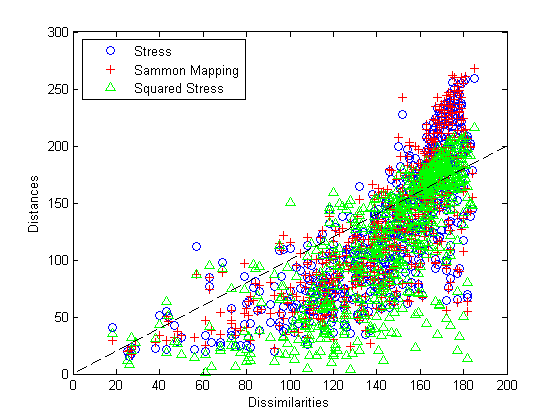
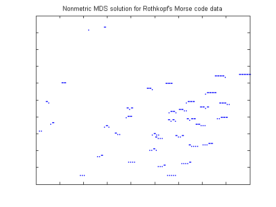
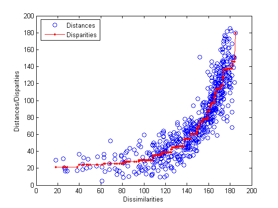
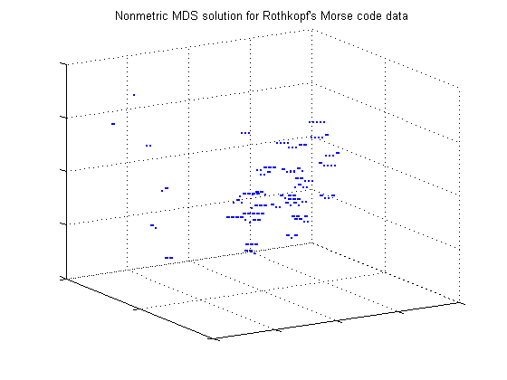
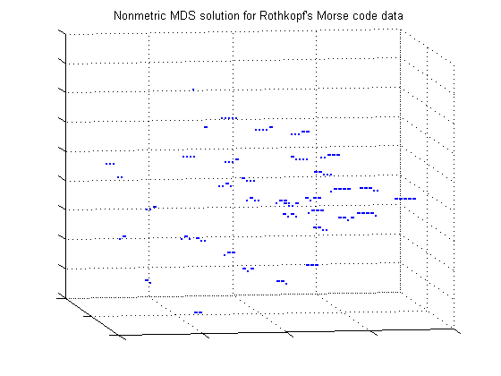

Multidimensional Scaling (MDS) is a method for visualizing dissimilarity data. This type of data arises when we have some set of objects, and instead of measuring the characteristics of each object, we can only measure how similar or dissimilar each pair of objects is. For example, instead of knowing the latitude and longitude of a set of cities, we may only know their inter-city distances. However, MDS also works with dissimilarities that are more abstract than physical distance. For example, we may have asked consumers to rate how similar they find several brands of peanut butter.
The typical goal of MDS is to create a configuration of points in one, two, or three dimensions, whose interpoint distances are "close" to the original dissimilarities. The different forms of MDS use different criteria to define "close". These points represent the set of objects, and so a plot of the points can be used as a visual representation of their dissimilarities.
This demo illustrates the "non-classical" forms of MDS. Some applications of "classical" MDS are described in the Classical Multidimensional Scaling demo.
To demonstrate MDS, we'll use data collected in an experiment to investigate perception of Morse code (Rothkopf, E.Z., J.Exper.Psych., 53(2):94-101). Subjects in the study listened to two Morse code signals (audible sequences of one or more "dots" and "dashes", representing the 36 alphanumeric characters) played in succession, and were asked whether the signals were the same or different. The subjects did not know Morse code. The dissimilarity between two different characters is the frequency with which those characters were correctly distinguished.
The 36x36 matrix of dissimilarities is stored as a 630-element vector containing the subdiagonal elements of the matrix. You can use the function SQUAREFORM to transform between the vector format and the full matrix form. Here are the first 5 letters and their dissimilarities, reconstructed in matrix form.
load morse
morseChars(1:5,:)
dissMatrix = squareform(dissimilarities); dissMatrix(1:5,1:5)
ans =
'A' '.-'
'B' '-...'
'C' '-.-.'
'D' '-..'
'E' '.'
ans =
0 167 169 159 180
167 0 96 79 163
169 96 0 141 166
159 79 141 0 172
180 163 166 172 0
In these data, larger values indicate that more experimental subjects were able to distinguish the two signals, and so the signals were more dissimilar.
Metric MDS creates a configuration of points such that their interpoint distances approximate the original dissimilarities. One measure of the goodness of fit of that approximation is known as the "stress", and that's what we'll use initially. To compute the configuration, we'll providing the MDSCALE function with the dissimilarity data, the number of dimensions in which we want to create the points (two), and the name of the goodness of fit criterion we are using.
Y1 = mdscale(dissimilarities, 2, 'criterion','metricstress'); size(Y1)
ans =
36 2
MDSCALE returns a set of points in, for this example, two dimensions. We could plot them, but before using this solution (i.e. the configuration) to visualize the data, we'll make some plots to help check whether the interpoint distances from this solution recreate the original dissimilarities.
The Shepard plot is a scatterplot of the interpoint distances (there are n(n-1)/2 of them) vs. the original dissimilarities. This can help determine goodness of fit of the MDS solution. If the fit is poor, then visualization could be misleading, because large (small) distances between points might not correspond to large (small) dissimilarities in the data. In the Shepard plot, a narrow scatter around a 1:1 line indicates a good fit of the distances to the dissimilarities, while a large scatter or a nonlinear pattern indicates a lack of fit.
distances1 = pdist(Y1); plot(dissimilarities,distances1,'bo', [0 200],[0 200],'k--'); xlabel('Dissimilarities'); ylabel('Distances')
This plot indicates that this metric solution in two dimensions is probably not appropriate, because it shows both a nonlinear pattern and a large scatter. The former implies that many of the largest dissimilarities would tend to be somewhat exaggerated in the visualization, while moderate and small dissimilarities would tend to be understated. The latter implies that distance in the visualization would generally be a poor reflection of dissimilarity. In particular, a good fraction of the large dissimilarities would be badly understated.
We could try using a third dimension to improve the fidelity of the visualization, because with more degrees of freedom, the fit should improve. We can also try a different criterion. Two other popular metric criteria are known as Sammon Mapping and squared stress ("sstress"). Each leads to a different solution, and one or the other might be more useful in visualizing the original dissimilarities.
Y2 = mdscale(dissimilarities,2, 'criterion','sammon'); distances2 = pdist(Y2); Y3 = mdscale(dissimilarities,2, 'criterion','metricsstress'); distances3 = pdist(Y3);
A Shepard plot shows the differences in the three solutions so far.
plot(dissimilarities,distances1,'bo', ... dissimilarities,distances2,'r+', ... dissimilarities,distances3,'g^', ... [0 200],[0 200],'k--'); xlabel('Dissimilarities'); ylabel('Distances') legend({'Stress', 'Sammon Mapping', 'Squared Stress'}, 'Location','NorthWest');
Notice that at the largest dissimilarity values, the scatter for the squared stress criterion tends to be closer to the 1:1 line than for the other two criteria. Thus, for these data, squared stress is somewhat better at preserving the largest dissimilarities, although it badly understates some of those. At smaller dissimilarity values, the scatter for the Sammon Mapping criterion tends to be somewhat closer to the 1:1 line than for the other two criteria. Thus, Sammon Mapping is a little better at preserving small dissimilarities. Stress is somewhere in between. All three criteria show a certain amount of nonlinearity, indicating that metric scaling may not be suitable. However, the choice of criterion depends on the goal of the visualization.
Nonmetric scaling is a second form of MDS that has a slightly less ambitious goal than metric scaling. Instead of attempting to create a configuration of points for which the pairwise distances approximate the original dissimilarities, nonmetric MDS attempts only to approximate the _ranks_ of the dissimilarities. Another way of saying this is that nonmetric MDS creates a configuration of points whose interpoint distances approximate a _monotonic transformation_ of the original dissimilarities.
The practical use of such a construction is that large interpoint distances correspond to large dissimilarities, and small interpoint distances to small dissimilarities. This is often sufficient to convey the relationships among the items or categories being studied.
First, we'll create a configuration of points in 2D. Nonmetric scaling with Kruskal's nonmetric stress criterion is the default for MDSCALE.
[Y,stress,disparities] = mdscale(dissimilarities,2); stress
stress =
0.1800
The second output of MDSCALE is the value of the criterion being used, as a measure of how well the solution recreates the dissimilarities. Smaller values indicate a better fit. The stress for this configuration, about 18%, is considered poor to fair for the nonmetric stress criterion. The ranges of acceptable criterion values differ for the different criteria.
The third output of MDSCALE is a vector of what are known as disparities. These are simply the monotonic transformation of the dissimilarities. They will be used in a nonmetric scaling Shepard plot below.
Although this fit is not as good as we would like, the 2D representation is easiest to visualize. We can plot each signal's string of dots and dashes to help see why the subjects perceive differences among the characters. The orientation and scale of this configuration is completely arbitrary, so no axis labels or values have been shown.
plot(Y(:,1),Y(:,2),'.', 'Marker','none'); text(Y(:,1),Y(:,2),char(morseChars(:,2)), 'Color','b', ... 'FontSize',12,'FontWeight','bold', 'HorizontalAlignment','center'); set(gca,'XTickLabel',[], 'YTickLabel',[]); title('Nonmetric MDS solution for Rothkopf''s Morse code data');
This reconstruction indicates that the characters can be described in terms of two axes: roughly speaking, the northwest/southeast direction discriminates signal length, while the southwest/northeast direction discriminates dots from dashes. The two characters with the shortest signals, 'E' and 'T', are somewhat out of position in that interpretation.
In nonmetric scaling, it is customary to show the disparities as well as the distances in a Shepard plot. This provides a check on how well the distances recreate the disparities, as well as how nonlinear the monotonic tranformation from dissimilarities to disparities is.
distances = pdist(Y); [dum,ord] = sortrows([disparities(:) dissimilarities(:)]); plot(dissimilarities,distances,'bo', ... dissimilarities(ord),disparities(ord),'r.-'); xlabel('Dissimilarities'); ylabel('Distances/Disparities') legend({'Distances' 'Disparities'}, 'Location','NorthWest');
This plot shows how the distances in nonmetric scaling approximate the disparities (the scatter of blue circles about the red line), and the disparities reflect the ranks of the dissimilarities (the red line is nonlinear but increasing). Comparing this plot to the Shepard plot from metric scaling shows the difference in the two methods. Nonmetric scaling attempts to recreate not the original dissimilarities, but rather a nonlinear transformation of them (the disparities).
In doing that, nonmetric scaling has made a trade-off: the nonmetric distances recreate the disparities better than the metric distances recreated the dissimilarities -- the scatter in this plot is smaller that in the metric plot. However, the disparities are quite nonlinear as a function of the dissimilarities. Thus, while we can be more certain that with the nonmetric solution, small distances in the visualization correspond to small dissimilarities in the data, it's important to remember that absolute distances between points in that visualization should not be taken too literally -- only relative distances.
Because the stress in the 2D construction was somewhat high, we can try a 3D configuration.
[Y,stress,disparities] = mdscale(dissimilarities,3); stress
stress =
0.1189
This stress value is quite a bit lower, indicating a better fit. We can plot the configuration in 3 dimensions. A live MATLAB figure can be rotated interactively; here we will settle for looking from two different angles.
plot3(Y(:,1),Y(:,2),Y(:,3),'.', 'Marker','none'); text(Y(:,1),Y(:,2),Y(:,3),char(morseChars(:,2)), 'Color','b', ... 'FontSize',12,'FontWeight','bold', 'HorizontalAlignment','center'); set(gca,'XTickLabel',[], 'YTickLabel',[], 'ZTickLabel',[]); title('Nonmetric MDS solution for Rothkopf''s Morse code data'); view(59,18); grid on
From this angle, we can see that the characters with one- and two-symbol signals are well-separated from the characters with longer signals, and from each other, because they are the easiest to distinguish. If we rotate the view to a different perspective, we can see that the longer characters can, as in the 2D configuration, roughly be described in terms of the number of symbols and the number of dots or dashes. (From this second angle, some of the shorter characters spuriously appear to be interspersed with the longer ones.)
view(-9,8);
This 3D configuration reconstructs the distances more accurately than the 2D configuration, however, the message is essentially the same: the subjects perceive the signals primarily in terms of how many symbols they contain, and how many dots vs. dashes. In practice, the 2D configuration might be perfectly acceptable.